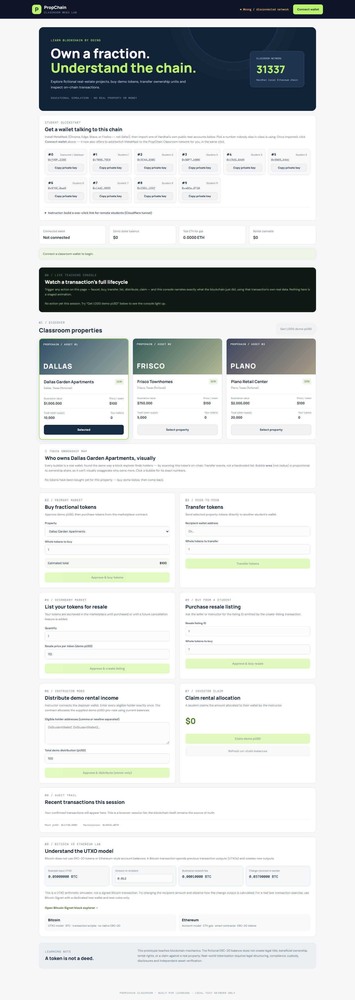
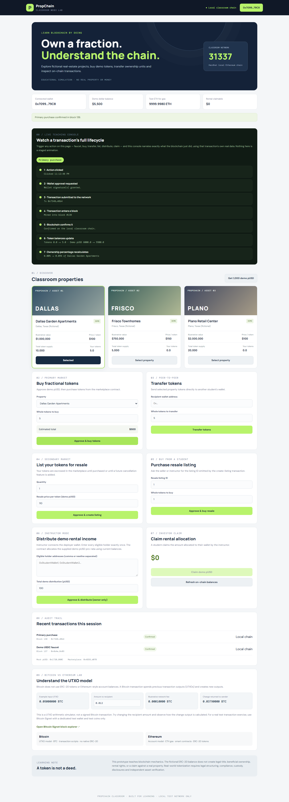
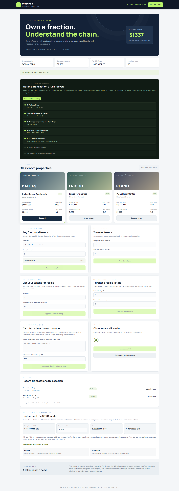
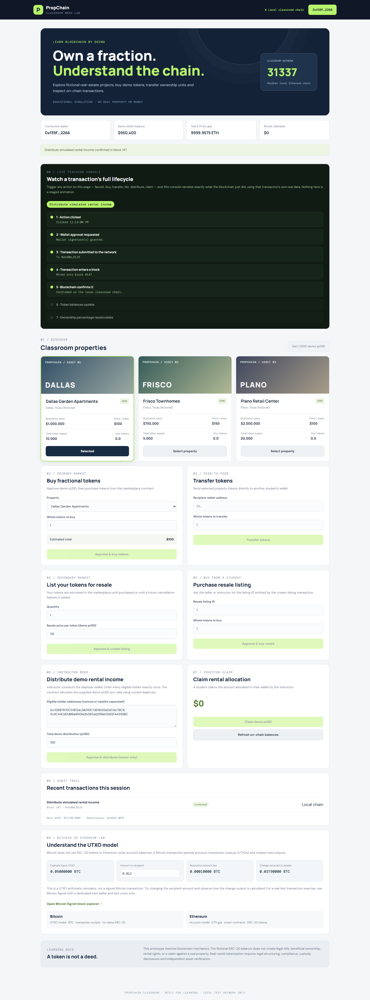
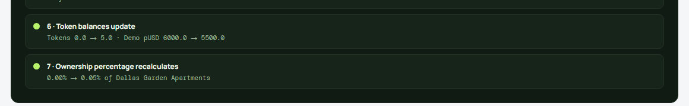
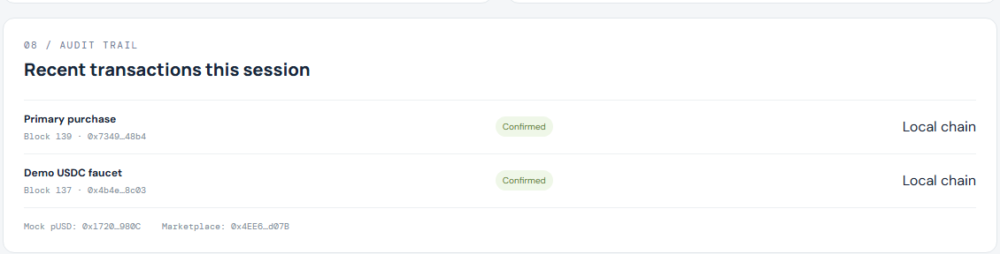

Install dependencies and compile the contracts
Two independent npm projects: blockchain/ (Hardhat + Solidity) and frontend/ (React + Vite). Nothing here is classroom-specific yet — this is the same build step you'd run on any machine.
cd propchain-classroom/blockchain
npm install # pulls hardhat, @openzeppelin/contracts, hardhat-toolbox
npx hardhat compile # downloads solc 0.8.24, compiles all 3 contractsCompiled 14 Solidity files successfully (evm target: paris). — 14 because OpenZeppelin's ERC-20/Ownable/SafeERC20 dependency tree compiles alongside the project's own 3 contracts.cd propchain-classroom/frontend
npm install # react, react-dom, ethers v6, vite, @vitejs/plugin-reactThe 48 npm audit warnings and deprecation notices on the blockchain install (old glob/inflight transitive deps inside Hardhat's own dependency tree) are expected noise from Hardhat's tooling chain, not this project's code — confirmed harmless by a clean compile and a clean test run.
Start the shared chain, deploy fresh contracts
Every deploy run creates brand-new contract instances with zero state — this is also how you "reset the classroom" between class periods (README §7): redeploy, don't necessarily restart the node.
cd blockchain
npm run node:shared
# Started HTTP and WebSocket JSON-RPC server at http://0.0.0.0:8545/
# ...prints 20 funded disposable test accounts...npm run deploy:shared
# Instructor/deployer: 0xf39Fd6e51aad88F6F4ce6aB8827279cffFb92266
# Dallas Garden Apartments: 0x9fE4...a6e0
# Frisco Townhomes: 0xDc64...cF6C9
# Plano Retail Center: 0x0165...2Eb8F
# Deployment written to: frontend/src/contracts/deployment.json
# Student demo wallets funded: 10| Property | Token | Supply | Illustrative value | Price / token |
|---|---|---|---|---|
| Dallas Garden Apartments | DGA | 10,000 | $1,000,000 | $100 |
| Frisco Townhomes | FTH | 5,000 | $750,000 | $150 |
| Plano Retail Center | PRC | 20,000 | $2,000,000 | $100 |
All three are fictional — confirmed directly in scripts/deploy.js's definitions array and in each location string ("… (fictional)").
Serve the classroom app, connect wallets
cd frontend
npm run dev -- --host 0.0.0.0
# Local: http://localhost:5173/
# Network: http://<instructor-lan-ip>:5173/For a real class: share the Network URL, have each student add the custom network (chain id 31337) and import one disposable Hardhat private key into MetaMask, per README §5. For instructor dry-runs and this guide's screenshots, see §5 Validate instead — it drives the same real UI without needing MetaMask installed.
8545 beyond the classroom LAN, and never reuse these well-known disposable keys for anything real — see Design limitations.npm/npx syntax and runs the same on macOS as on Windows. The two steps that genuinely differ by OS — the firewall permission prompt, and the command to find your LAN IP (ipconfig on Windows vs. ipconfig getifaddr en0 on macOS) — are covered in README.md → macOS instructor setup. That section is a direct translation of the Windows steps and hasn't been independently re-run end-to-end on an actual Mac the way the rest of this guide has.Solidity unit tests
Contract-level tests using Hardhat + Chai, independent of any UI.
cd blockchain
npx hardhat test PropChain classroom contracts
✔ sells primary tokens after payment approval (6984ms)
✔ transfers property tokens between students (81ms)
✔ creates and completes a resale (59ms)
3 passing (7s)These three cover primary purchase, direct transfer, and resale — but not distributeRental/claimRental (the pro-rata income split). That path is exercised instead by the end-to-end run below, against the real UI, with real pro-rata math checked.
End-to-end validation: two students, an instructor, one shared chain
testing/validate.mjs is an instructor dry-run tool, not part of the classroom app. It drives the real built UI — the same HTML/JS a student's browser loads — through the entire documented workflow, using Playwright with a small injected test wallet in place of MetaMask (so it's scriptable). Re-run it any time you change a contract or the UI, before trusting the app in front of a class.
eth_requestAccounts/eth_chainId locally and forwards everything else (approvals, transfers, reads) verbatim to the real Hardhat JSON-RPC node — so every transaction below is a genuine on-chain transaction, signed by Hardhat's own well-known test accounts, exactly as real MetaMask would produce. Real classroom sessions still use real MetaMask, per README §5.
cd testing
npm install # first time only — installs Playwright
npx playwright install chromium # first time only
npm run validateWhat it actually does, end to end, against the live Dallas Garden Apartments token (10,000 total supply):
- Student A connects, requests the demo pUSD faucet, buys 5 tokens on the primary market.
- Student B connects and faucets separately.
- Student A sends 2 tokens directly to Student B (peer-to-peer transfer).
- Student A lists the remaining 2 tokens for resale at 110 pUSD each.
- Student B buys that resale listing. Checked: A now holds 1 token, B holds 4 — exactly matching 5 bought − 2 sent − 2 listed, and 2 received + 2 bought.
- The instructor distributes 100 demo pUSD rental income across A and B, pro-rata by current balance.
- A claims. Checked: 1/5 share = exactly 20 pUSD, not an approximation.
- B claims. Checked: 4/5 share = exactly 80 pUSD.
- The Bitcoin UTXO lab's change-output arithmetic is checked independently (0.05 − 0.02 − 0.0001 = 0.0299 BTC).
| # | Assertion | Expected | Got | |
|---|---|---|---|---|
| 1 | Student A final token balance | 1.0 | 1.0 | PASS |
| 2 | Student B final token balance | 4.0 | 4.0 | PASS |
| 3 | Student A claimable rental (1/5 of 100) | $20 | $20 | PASS |
| 4 | Student B claimable rental (4/5 of 100) | $80 | $80 | PASS |
| 5 | Bitcoin UTXO change output | 0.0299 BTC | 0.0299 BTC | PASS |
(Balance checks for A and B each resolve two assertions in the script — 7 total, all green on the last run.)
These are full real screenshots of the single-page app — each one very tall, since the whole workflow lives on one scrolling page rather than separate dashboard screens. Click any one to open it full-resolution in a new tab.




Cropped from the full screenshot above so the two numbers that matter are actually legible without clicking through.


Full set of 14 screenshots lives in docs/screenshots/ alongside this guide, in run order.
Watching a transaction's full lifecycle, live
The original project notes proposed a "visual blockchain teaching console" as the natural next step beyond a working demo — something that narrates, step by step, what actually happens between a student's click and their balance updating. That's now built into the app itself (frontend/src/App.jsx), not a separate tool.
It's wired into the single function (run()) that every action button already goes through, so it applies uniformly to the faucet, buy, transfer, resale, distribute and claim actions — not a one-off demo for just one button. Every number below is real, read from the chain at the moment it happens; nothing is pre-scripted. The only artificial touch is pacing: steps are revealed a few hundred milliseconds apart so a classroom audience can actually follow along, since the underlying local chain is fast enough to resolve most of this in well under a second.
- 1 · Action clickedClicked 11:12:40 PM
- 2 · Wallet approval requestedWallet signature(s) granted.
- 3 · Transaction submitted to the networkTx 0x7349…4b4
- 4 · Transaction enters a blockMined into block #139
- 5 · Blockchain confirms itConfirmed on the local classroom chain.
- 6 · Token balances updateTokens 0.0 → 5.0 · Demo pUSD 6000.0 → 5500.0
- 7 · Ownership percentage recalculates0.00% → 0.05% of Dallas Garden Apartments
That's the actual console state captured in docs/screenshots/03-student-a-primary-purchase.png above — transcribed here, not re-typed from imagination.
Why steps 2–4 are "approximate"
Some actions (buy, resale, rental distribution) need two wallet signatures under the hood — an ERC-20 approve, then the main action — because that's how the real contracts work. The console's "wallet approval" step covers both signatures honestly rather than claiming a precise 1:1 mapping it can't guarantee for every action.
Why it never blocks a real transaction
The balance/ownership snapshots (steps 6–7) are read with their own short timeout and wrapped in try/catch. If a snapshot read is ever slow, the console just says "updated" without exact numbers — it never delays or risks the actual on-chain action.
Try it yourself (single machine, quick test)
With the node, deployment, and frontend from sections 1–3 already running, this is the fastest way to watch the console live — instructor and "student" both in the same browser, using localhost instead of a LAN IP (see README.md §5 for the multi-machine classroom version).
- Install MetaMask — Chrome, Edge, Brave, or Firefox. Not Safari.
- Add the network — MetaMask → network dropdown → Add network → Add a network manually: name
PropChain Classroom, RPC URLhttp://localhost:8545, chain ID31337, currency symbolETH. - Import a test account — account icon → Add account or hardware wallet → Import account, then paste one of the disposable Hardhat keys printed by
npm run node:shared(account #0 is the instructor, #1 a student — see README.md §"Try the Live Teaching Console yourself" for the exact keys). - Open the app —
http://localhost:5173, in the same browser where MetaMask is installed. - Connect — click Connect wallet, approve in MetaMask. The badge should flip to green "● Local classroom chain"; if it says "Wrong/disconnected network," switch MetaMask to the PropChain Classroom network.
- Trigger an action — click "Get 1,000 demo pUSD" (one signature) and watch the console's 7 steps light up in real time.
- Try a richer one — "Approve & buy tokens" needs two signatures, and shows real before/after numbers in steps 6–7 (balance and ownership % actually changing).
Every button re-triggers the console with that action's own real label and data — Transfer, List for resale, Claim, etc. each narrate differently.
Eight things you can actually teach with this app
Each concept below is grounded in a specific, real line of code or a real number from the validation run — not generic blockchain-101 filler.
1 · Blockchain fundamentals
All three students and the instructor read and write the same ledger (chain id 31337) — there's no central database the app owns. Show the "Local classroom chain" badge in the header and the 31337 stat card; every action's receipt carries a real block number, visible in the Audit Trail panel and in the Teaching Console's step 4.
2 · Cryptocurrency — gas vs. a payment token
The app deliberately uses two different assets so the distinction is visible: ETH pays for gas (shown in the metrics row, ticking down slightly after every action) and demo pUSD (MockUSDC, an ERC-20 with 6 decimals, "not USDC and has no monetary value" per MockUSDC.sol's own comment) is what tokens and rental income are actually priced and paid in. The built-in Bitcoin UTXO lab (§9 in the app) contrasts this account-balance model against Bitcoin's spend-the-whole-output-and-get-change model — try the "change returned to sender" field live.
3 · Smart contracts
Three real contracts, each under 170 lines, each with one job:
MockUSDC.sol
ERC-20 with a capped public faucet() — anyone can mint up to 10,000 pUSD at a time for classroom use.
PropertyToken.sol
Fixed-supply ERC-20 per property, minted entirely to the marketplace at deploy time. Adds one read-only helper: ownershipBasisPoints().
PropertyMarketplace.sol
Owns primary listings, resale escrow, and the rental-distribution/claim ledger. The only onlyOwner-gated actions: listing a property and distributing rental income.
4 · Tokenization
Buying 5 of Dallas Garden Apartments' 10,000 tokens means owning 0.05% of that fictional property's economics — read directly from the contract:
// PropertyToken.sol
function ownershipBasisPoints(address holder) external view returns (uint256) {
return (balanceOf(holder) * 10_000) / totalSupply();
}The app surfaces this exact calculation live in the Teaching Console's step 7 (see §6 above) — "0.00% → 0.05%" is this formula, not a rounded display trick.
5 · Marketplace (primary sale)
// PropertyMarketplace.sol
function buyPrimary(address token, uint256 wholeTokenAmount) external {
...
IERC20(token).safeTransfer(msg.sender, tokenAmount);
paymentToken.safeTransferFrom(msg.sender, owner(), totalPrice);
}Two transfers in one transaction: tokens out of the marketplace's own balance, demo pUSD from the buyer straight to the instructor (the contract's owner()). There's no inventory counter — the marketplace simply runs out of a property's tokens when its balance hits zero, which is itself a teachable moment about how on-chain "supply" really works.
6 · Secondary trading (resale)
Unlike primary sales, a resale listing escrows the seller's tokens inside the marketplace contract until a buyer pays:
function createResaleListing(...) external returns (uint256 listingId) {
IERC20(token).safeTransferFrom(msg.sender, address(this), amount); // escrow
...
}
function buyResale(uint256 listingId, uint256 wholeTokenAmount) external {
...
paymentToken.safeTransferFrom(msg.sender, listing.seller, totalPrice); // seller paid directly
IERC20(listing.token).safeTransfer(msg.sender, amount); // tokens released
}Worth contrasting explicitly with real platforms (RealT, Lofty.ai): here resale is a public, permissionless listing anyone can fill — a real compliant secondary market would gate this behind KYC/whitelisting and run through a broker-dealer or ATS, exactly the gap called out in README.md's "Important design limitations" section.
7 · Income distribution
The validation run's actual numbers make the pro-rata math concrete instead of abstract: with Student A holding 1 token and Student B holding 4 (5 total in circulation between them), a 100 pUSD distribution split exactly 20 / 80 — not 50/50, not rounded, derived live from each holder's real balance at the moment of distribution:
uint256 share = (totalAmount * holderBalance) / totalHeld;
rentalClaimable[holders[i]] += share;Claiming is a separate, second transaction (claimRental()) — a deliberate pull-payment pattern (see security below) rather than the contract pushing pUSD to every holder automatically.
8 · Blockchain security
Access control
addProperty() and distributeRental() are onlyOwner (the instructor's address, fixed at deploy time). Try calling either from a student account in the console — it reverts.
Pull over push payments
claimRental() makes each holder withdraw their own share instead of the contract pushing funds to a list of addresses — the standard mitigation against one bad recipient (e.g. a contract that reverts on receipt) blocking everyone else's payout.
Duplicate-holder guard
distributeRental's nested loop explicitly reverts on a repeated address — without it, an instructor typo could double-pay one student at everyone else's expense.
The approve/transferFrom risk
Every purchase requires an ERC-20 approve before the main call — a real pattern, and a real teaching moment: an approval doesn't move funds by itself, but an unlimited or stale approval left behind is a classic phishing vector in production DeFi.
Ready-made exercises (from README.md §"Suggested classroom exercises")
Eleven exercises ship with the project already, from comparing wallet addresses to a full threat-modeling discussion. Two are worth calling out because this guide's validation run demonstrates them directly with real numbers: Exercise 3 ("Buy 5 tokens, calculate your fraction of total supply" → 5/10,000 = 0.05%, shown live in §6) and Exercise 6 ("Distribute 1,000 demo USDC, compare claim amounts with token balances" → this run used 100 pUSD split 20/80 by a 1:4 balance ratio, shown in §7). Use the Teaching Console to make every other exercise equally concrete.
Design limitations (intentional, from README.md)
- Tokens confer no deed/title, beneficial ownership, voting rights, or enforceable real-estate claim.
- No KYC/AML, securities compliance, custody, valuation, or title verification — by design, not oversight.
- MockUSDC has no monetary value; resale here is a teaching example, not a regulated secondary market.
- Rental distribution trusts the instructor to list each eligible holder exactly once per run.
- Never deploy with real assets, real funds, or on a public network.
Project structure
propchain-classroom/
blockchain/ Solidity contracts, Hardhat config, deploy script, unit tests
frontend/ React + Vite classroom app (incl. the Teaching Console)
testing/ Instructor-only Playwright validation harness (this guide's source)
docs/
guide/index.html This guide
screenshots/ 12 from the validation run + 2 cropped close-ups, referenced above